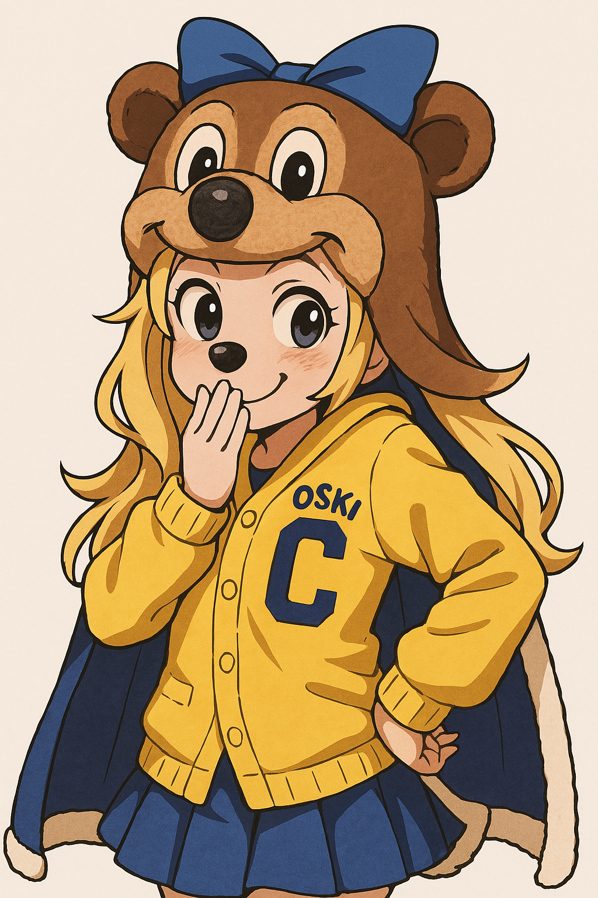

April Fools!
Got ya!
In the spirit of April Fools' Day pranks, we wanted to have a little fun. Nonetheless, let's try our best to make this comes true!

In the spirit of April Fools' Day pranks, we wanted to have a little fun. Nonetheless, let's try our best to make this comes true!